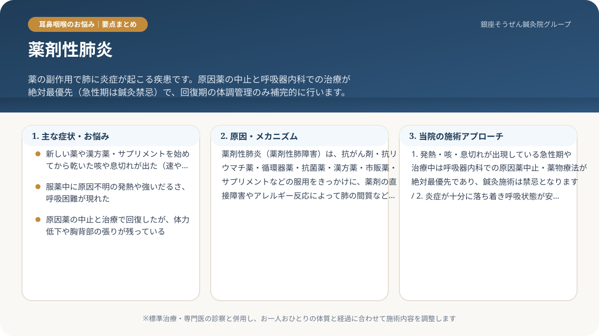
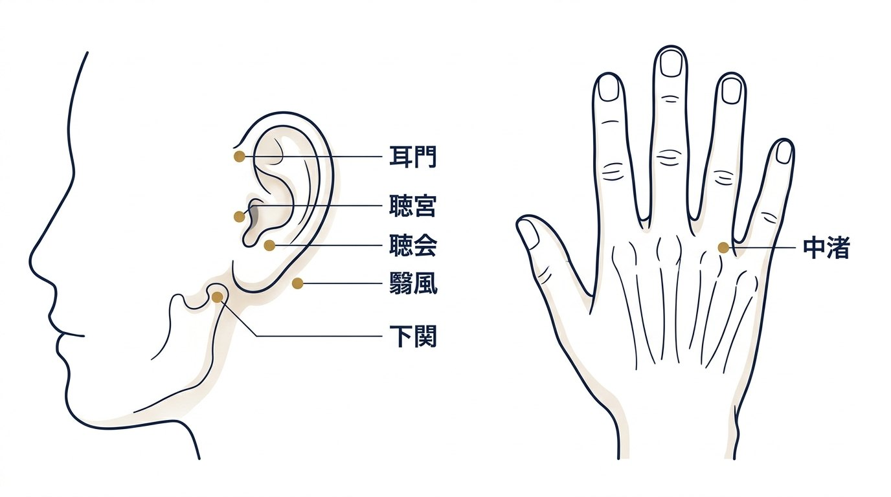

薬剤性肺炎の鍼灸
薬の副作用で肺に炎症が起こる疾患です。原因薬の中止と呼吸器内科での治療が絶対最優先（急性期は鍼灸禁忌）で、回復期の体調管理のみ補完的に行います。
まず知っておきたい要点と改善の流れ

薬剤性肺炎（薬剤性肺障害）は、抗がん剤・抗リウマチ薬・循環器薬・抗菌薬・漢方薬・市販薬・サプリメントなどの服用をきっかけに、薬剤の直接障害やアレルギー反応によって肺の間質などに炎症が生じる病気です。急速に重症化する場合もあるため、疑わしい症状が出た際は速やかに処方医・呼吸器内科を受診し、原因薬の中止やステロイド治療などの専門対応を受けることが絶対最優先です。
このようなお悩みはありませんか？
- ✓新しい薬や漢方薬・サプリメントを始めてから乾いた咳や息切れが出た（速やかに受診）
- ✓服薬中に原因不明の発熱や強いだるさ、呼吸困難が現れた
- ✓原因薬の中止と治療で回復したが、体力低下や胸背部の張りが残っている
- ✓治療終了後、主治医の許可のもと自律神経や全身の疲れを穏やかに整えたい
当院の施術アプローチ・改善の流れ
なぜ鍼灸で改善へ向かうのか？（作用機序の図解）
薬剤性肺炎に対する鍼灸は、耳周囲・頸部の微小循環改善と聴覚・粘膜調整機序を通じて、お体本来の回復力を引き出します。

翳風・風池・合谷など、耳鼻咽喉領域の神経・血管と連動する経穴へ繊細にアプローチします。
首・顎まわりの深層筋緊張を緩め、内耳や粘膜周囲の滞った血流とリンパ循環を促します。
ストレスや睡眠不足で高ぶった交感神経を鎮め、音への過敏反応や粘膜の過剰反応を和らげます。
標準治療を妨げない設計で、生活支障度（THI等）の軽減と再発しにくい体調づくりを支えます。
院長YouTube解説・関連動画
薬剤性肺炎は、薬によって起きる肺障害のこと
薬剤性肺炎は、薬によって起きる肺障害のことです。薬剤性肺炎には色々なタイプが含まれており、中には急性の肺炎や亜急性の間質性肺炎、好酸球性肺炎などがあります。
原因となる薬はいろいろあり、抗がん剤や抗リウマチ薬、漢方薬、消炎鎮痛薬や抗菌薬などの病院で使われる薬だけではなく、一般用医薬品や健康食品などが原因となることもあります。
症状は、息切れや呼吸困難、痰のない咳、血痰、発熱、倦怠感など
薬剤性肺炎の症状は、息切れや呼吸困難、痰のない咳、血痰、発熱、倦怠感などです。他にも、皮疹や口腔内粘膜疹などが見られることもあります。
症状が軽い場合は、特に自覚症状は現れません。そのため、場合によっては胸部X線などによって薬剤性肺炎を発症していることが発見されることもあります。
症状が重い場合は、呼吸不全になることもあります。
調べてみると、経皮的動脈血酸素飽和度が下がっていたり、胸部の音を聞いた時乾性ラ音が聞き取れたりすることもあります。
・呼吸困難
薬剤性肺炎の代表的な症状の一つが呼吸困難です。肺の炎症反応により、肺胞が損傷し、ガス交換がうまく行われなくなるため、酸素の供給が不足し、呼吸困難が引き起こされます。呼吸困難の程度は軽度から重度まで様々であり、重症化すると生命を脅かすこともあります。
咳も薬剤性肺炎の代表的な症状の一つであり、肺の炎症により気道が刺激されることで起こります。咳の症状は、乾いた咳や痰を伴う咳があり、痰は透明から黄色、緑色、または血痰となることがあります。
薬剤性肺炎により肺に炎症反応が起こると、体温が上昇することがあります。発熱は通常38度以上の体温上昇を指し、体温の上昇幅や持続時間は個々の患者や病状によって異なります。
胸痛は薬剤性肺炎において比較的珍しい症状ですが、肺の炎症が胸膜に及ぶと胸痛が引き起こされることがあります。胸痛の特徴や程度は様々であり、胸のどの部位に痛みが現れるかも異なります。
・その他の症状
薬剤性肺炎による肺の炎症反応が全身に影響を及ぼすことがあり、全身倦怠感や食欲不振などの症状が現れることがあります。また、薬剤性肺炎に関連して他の臓器に障害が生じることもあり、肝臓や腎臓の機能障害などが見られることがあります。
薬剤性肺炎を改善するためには、最初に原因であると疑われる薬をやめることが大事です。症状が軽い場合は原因となっている薬をやめるだけで改善することもあります。
しかし、自分が発症している病気があり、その病気を改善するために必要である薬が原因になることもあります。その場合は、他の種類の薬に変えることが必要になります。
また、原因になった薬は再び使わないようにすることも大事です。
症状が中等度以上の場合や原因となっている薬をやめただけでは改善しない場合、ステロイドを使います。症状が重くなると、ステロイドを大量に使う方法で改善を行なった後、ステロイドの内服を行うことも多いです。
・原因薬剤の特定と中止
薬剤性肺炎の改善の第一歩は、原因となる薬剤の特定と中止です。症状が発現した時点で、使用していた薬剤を詳細に検討し、病状との関連性を評価することが重要です。原因となる薬剤が特定できた場合、その薬剤を中止し、代替薬の使用を検討します。
・酸素の補充や人工呼吸器の使用
薬剤性肺炎の改善において、重要な要素で、状態によっては、酸素の補充や人工呼吸器の使用が必要となることがあります。また、栄養状態の改善や体液バランスの調整も大切です。これにより体力を回復させ、病状の改善を図ります。
・副腎皮質ステロイドの使用
薬剤性肺炎に対する改善として、副腎皮質ステロイドの使用が検討されることがあります。ステロイドは強力な抗炎症作用を有しており、肺の炎症を抑えることができます。ただし、ステロイドの使用には副作用のリスクが伴うため、慎重な判断が必要です。ステロイドの使用が適切であるかどうかは、症状や病状によって異なります。
・その他の方法
薬剤性肺炎の改善方法には、その他にも様々な改善方法が検討されます。免疫調整薬や抗線維化薬の使用が考えられることもあります。また、特定の病因による薬剤性肺炎の場合、それに対応した改善が必要となることがあります。たとえば、感染症による薬剤性肺炎の場合、適切な抗感染症薬の使用が必要となります。
アルント・シュルツの法則
鍼灸院には基本的に薬で悪化して来院される人が多いです。薬は適切に使用すれば効果を発揮しますが、過剰な量や長期な不適切な使用は症状の悪化につながります。
この現象を理解するためにはアルント・シュルツの法則が役に立ちます。この法則は、生理学や薬理学において刺激の強さと生体反応の関係を示す原則で、ドイツの薬理学者ルドルフ・アルントとユーゴ・シュルツによって１９世紀に提唱された法則です。
この法則では、
- •弱い刺激は活動を促進する
- •中程度の刺激は活動を維持する
- •強い刺激は活動を抑制する
- •非常に強い刺激は活動を停止させる
と提唱されています。
アルント・シュルツの法則は薬の使用においても非常に重要な法則です。適切な容量の薬は効果を発揮し改善を助けてくれますが、容量が過剰になったり長期にわたって使用されたりすると期待される薬の効果を超えて整体に有害な影響を及ぼすことがあります。これが薬の副作用の原因となります。
当院では、お腹が痛い、気持ち悪くて全身がだるいなどという訴えで来院され、薬をいつから飲んでいるのか尋ねると、月単位や年単位で服用しているという方も多いです。そういう方の飲んでいる薬の副作用を調べると、悩んでいる症状と薬の副作用が一致していることが多いです。
ツボの位置と押し方
肺兪は、肩甲骨の内上角の高さで、第3胸椎から左右外側に指幅約2本分進んだ場所にあります。左右両側にあるツボです。
背部にあるため、ツボを押すときは自分で押すよりも家族や友達などに押してもらうことをお勧めします。また、お灸などをしてもらって温めることも非常に効果的です。
尺沢は肘を曲げた時にできるシワの上にあります。肘を曲げて親指側にある筋肉の外側のへこんだ場所を探しましょう。
お灸を行うことも効果的なツボです。お灸がないときは自分で力加減に注意して優しく押しましょう。強く押しすぎると痛い場所にあるツボのため、力加減は自分で加減することをお勧めします。
雲門の場所は、鎖骨の下縁から肩に向かって進んだ時のくぼみです。鎖骨の下から指で外に向かって触り、肩の骨にぶつかった時にあるへこみにツボがあるのです。
押すときのイメージは、体の奥へ向かってツボを押すイメージです。ゆっくりと気持ちが良く感じるくらいの力で押すことをお勧めします。
突発性難聴・耳管不調・顎関節症のツボ図解
実際の施術ではお一人おひとりの体質・症状に合わせて選穴しますが、突発性難聴・耳管開放症/狭窄症・顎関節症・食いしばりのケアの臨床でよく用いられる代表的なツボの目安です。

📌 代表的なツボの詳細一覧表を開く（6穴） ▼
| ツボ名 | 位置の目安 | 主な狙い | セルフケアの注意点 |
|---|---|---|---|
| 耳門（じもん） | 耳の穴の前上、口を開けるとくぼむ上部 | 耳鳴り・耳閉感・側頭部の緊張緩和 | 突発性難聴は発症48時間以内の耳鼻科受診が最優先です。 |
| 聴宮（ちょうきゅう） | 耳の穴の真ん中の前、口を開けるとくぼむ所 | 内耳の微小循環・聴覚過敏や耳管不調のサポート | 口を軽く開けた状態で優しく触れます。 |
| 聴会（ちょうえ） | 耳たぶの付け根の前、口を開けるとくぼむ下部 | 耳周囲と顎関節の連動緊張を和らげるツボ | 強く押し込まず心地よい範囲で刺激します。 |
| 翳風（えいふう） | 耳たぶのすぐ後ろのくぼみ | 内耳循環と自律神経（迷走神経枝）の調整 | 耳周囲の冷え対策に蒸しタオルも有効です。 |
| 下関（げかん） | 耳の前、頬骨のアーチの下のくぼみ（顎関節部） | 顎関節症・食いしばり・咬筋のこわばり緩和 | 口を開閉して痛みが出る場合は無理に動かさず優しく押します。 |
| 中渚（ちゅうしょ） | 手の甲、薬指と小指の骨の間（拳のくぼみ） | 三焦経の要穴として耳の不調を遠隔から整えるツボ | 耳に触れにくい急性期でも安全に使える遠隔穴です。 |
国際査読論文の科学的エビデンス
国際的な医学データベース（PubMed・Cochrane等）で報告されている突発性難聴・耳管開放症/狭窄症・顎関節症・食いしばりのケア領域の代表的な査読済み鍼灸研究をまとめています（標準治療との併用や研究上の限界を含めて正確に掲載）。
📚 査読論文データ・PubMed出典リンクを開く（4件） ▼
| 年・研究デザイン | 対象・規模 | 主な結果 | 限界・出典 |
|---|---|---|---|
| 2013年 大規模多施設RCT | 季節性アレルギー性鼻炎 422名（ドイツ） | 7〜8週のRQLQ QOLがシャム比0.5点・薬単独比0.7点改善（P<0.001）、頓用薬使用も有意減少（P<0.001）。 | 1年目16週では群間差消失、臨床的意義は慎重評価。 Ann Intern Med (PMID: 23420231) |
| 2021年 メタ解析 | 耳鳴り 8 RCTs（n=504） | 生活支障度THI（MD -10.11, p<0.001）・TSI（MD -8.36, p<0.001）が有意改善。VASは有意差なし（p=0.06）。 | 組入れRCTの質・サンプル規模に限界あり。 Acupunct Med (PMID: 32772848) |
| 2026年 ネットワークメタ解析 | 突発性難聴 36研究（n=3,360・標準治療併用） | ステロイド等の標準治療への鍼灸併用で総有効率RR 1.19（p<0.0001）、3週間コースが推奨。 | エビデンス確実性は低く標準治療（早期ステロイド）併用が前提。 Complement Ther Med (PMID: 42918509) |
| 2023年 メタ解析 | 成人顎関節症 22 RCTs統合（n=471） | 標準治療併用で有効率RR 1.36・疼痛VAS MD -1.23と有意改善。 | GRADE確実性は低〜非常に低、さらなる高品質RCTが必要。 Medicine (PMID: 37746950) |
参考文献・出典
- 2013年 大規模多施設RCT（季節性アレルギー性鼻炎 422名（ドイツ））— Ann Intern Med (PMID: 23420231)
- 2021年 メタ解析（耳鳴り 8 RCTs（n=504））— Acupunct Med (PMID: 32772848)
- 2026年 ネットワークメタ解析（突発性難聴 36研究（n=3,360・標準治療併用））— Complement Ther Med (PMID: 42918509)
- 2023年 メタ解析（成人顎関節症 22 RCTs統合（n=471））— Medicine (PMID: 37746950)
よくある質問（FAQ）
Q. 薬を飲み始めてから咳や息切れが出ましたが、まず鍼灸で様子を見てもよいですか？▼
Q. 治療が落ち着いてから体調回復のために通うことはできますか？▼
あわせて読まれる関連疾患（耳鼻咽喉のお悩み）
ある日突然片耳などが聞こえにくくなる感音難聴です。発症早期の耳鼻科ステロイド治療を最優先に、早期併用や回復期の耳鳴り・めまいをケアします。
実際には音がないのに耳の中で雑音が聞こえる状態です。耳の血流や自律神経・脳の過敏さを整えるケアで軽減を目指します。
肺胞壁が徐々に硬くなり息切れや乾いた咳が生じる指定難病です。呼吸器専門医の治療を最優先に、安定期の呼吸のしやすさと体力を補完的に支えます。
肺の間質に炎症や線維化が起こる疾患の総称です。呼吸器内科の標準治療と急性増悪予防を最優先とし、安定期・主治医許可下でのみ補完ケアを行います。
喉の口蓋扁桃に細菌やウイルスが感染して腫れや高熱が出る病気です。急性感染期は医療機関受診が最優先（鍼灸禁忌）で、回復期・再発予防を支えます。
喫煙などの有害物質で気道や肺が傷むCOPD。禁煙と呼吸器専門医管理を最優先に、安定期・主治医許可下で呼吸のしやすさを支えます。
CLINICAL RECOVERY CASES
✨ 実際の臨床改善事例・回復経過を見る
銀座本院をはじめ各院での実際の改善事例を症状別に絞り込んでご確認いただけます。
おひとりで悩まず、まずはご相談ください
銀座本院・川口・大宮・横浜・博多・田無の各院でご予約を承っております。